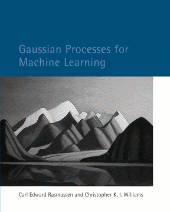

Useful links
Gaussian process
Book: Gaussian process for machine learning
|  |
Toolboxes:
Sheffield Machine Learning Software, including GPy, GPyOpt, etc.
My personal Matlab toolbox for process regression (MV-GPR) and multivariate Student-t process regression (MV-TPR)
Radio programming
青春的土壤中，只有记忆是潮湿的。我们不是植物，不能在这块土地上生生不息。当我们回眸青春，仿佛有一种说不出的痛。很多人问我，青春的诀别是否意味着年迈的将近，其实，青春，它一直都在继续…… —— 《让青春继续》
广播剧：让清楚继续1季——我的初恋故事 by 动听996, amy.com
广播剧：让清楚继续2季——在那阴冷灰暗的日子里 by 动听996, amy.com
广播剧：让清楚继续3季——最珍贵年轻的心 by 动听996, amy.com
广播剧：让青春继续的主播们 by 动听996, amy.com
广播剧：让青春继续背景音乐 by 动听996, amy.com